Misadventures in MP3s
I have what I would generously call an MP3 collection! I started in early 2023 to replace Spotify, so I could listen to songs from more games, expand my tastes, and customize to my liking. It's not so big, just 27,129 tracks making up 833 albums, taking up a total of 143 GB. At time of writing at least.
Keeping all the songs tagged, sorted, and synced between devices is more fun than you might think, and I've developed a set of guidelines for how the files and mp3 tags are formatted. I've still yet to figure out genre though. (Seriously, genre is all well and good with normal music mostly, but when it comes to game OST, it all goes ot the window. How do you deliniate between a Super Mario 3d World and, say, a Binding of Isaac? And how do you seperate those from an Ace Attorney? All very different sounding music.)
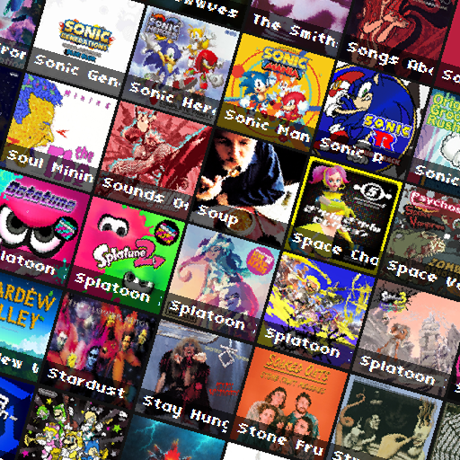
To explore some music I like, click the buttons to the left! I've sorted it by rough year (though I can't really place anything before year of writing, so anything before 2024 is grouped together), and I've also tried to link places to purchase / listen to albums where possible.
2024
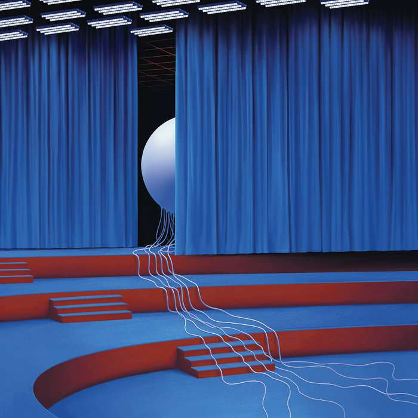
Digital Nightmare - TWRP
March 23rd 2024
I'm a TWRP Lover. I've been a TWRP lover for a long time (Together Through Time, my beloved). Digital Nightmare hits all the right notes for me. It has banger upbeat jam in Online. It has slower, more contemplative but still banger song in Human Touch. It also has a song about HTML. 10/10.
Splatoon 3: Side Order
Mid 2024
I'll save the gushing about Splat 3's base soundtrack for when I write the bit on it seperately, but I really like what we got in Side Order! Admittedly, the 'level themes' (i.e. the songs that play while you're fighting non-boss floors) aren't exactly replayable bangers like previous story levels, but everything else is top notch. The lobby themes are really cool, and Short Order and the Ebb & Flow music really pump up their respective fights. Marina Agitando has got to be my favorite track of the bunch.


Splatoon 3: Grand Fest
September 2024
Would you look at that! Side order and Grand Fest back to back, same as the games list! That sure made it easy to copy paste over!
For real, Grand Fest was super awesome from a music standpoint. Since music was a big part of why I got into Splatoon in the first place, seeing them being 'performed' 'live' was cool! I can't pick a favorite song...
Alive 2007 - Daft Punk
Alive 2007 turned me around on live albums. I used to think that people cheering in the background would be a deal breaker, but it ended up being the opposite. Might help that I heard Around the World / Harder Better Faster Stronger first in Beat Saber, where a cheering crowd really adds to the atmosphere.
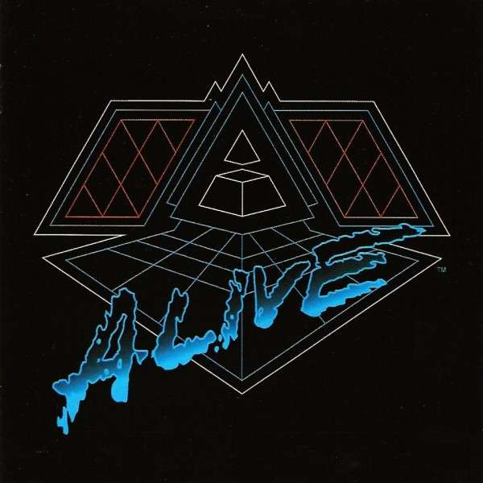
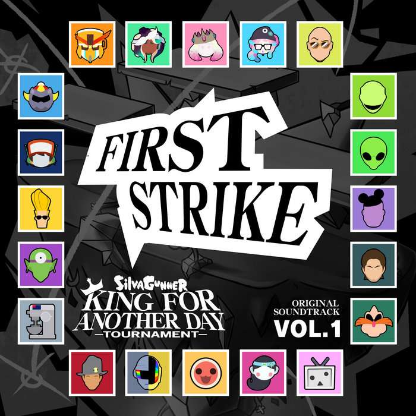
SIlvagunner: King for Another Day Tournament
October 2024
What a fool I have been for ignoring the King for Another Day soundtrack for so long. I haven't even really sat down and listened to the whole thing in full yet, just jumped around to things I recognise. Lots to love from Off the Hook (ft. Paruko), Daft Punk (ft. Pharrell), Law & Disorder, and especially Mariya Takeuchi and DJ Professor K. There's even a 2Mello song in there! And it's Splatoon!
Memories of Tokyo-To - 2 Mello
October 2024
On the Subject of 2 Mello, I Took longer than I should've to jump to these albums after enjoying Bomb Rush so much. I can confirm, this album (and it's sequel, Sounds of Tokyo-To Future) similarly rock your socks. Favorite Tracks: 24 Hour Party People, Ba-da-Ba, BREAK DOWN BREAK UP, LUV 2 LUV.
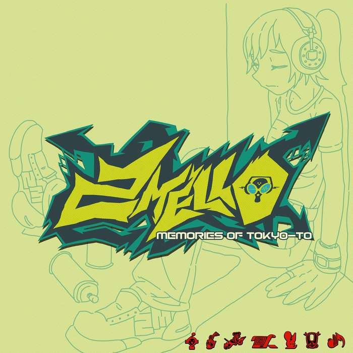
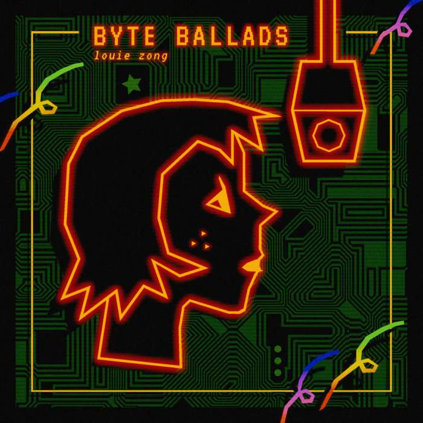
Byte Ballads - Louie Zong
November 2024
Louie Zong is awesome, and an extremely talented musician, but none of his albums have grabbed me before like Byte Ballads did. It's slow and a little sad, but plesant to listen to and uplifting at the same time. Favorite track is NOW LOADING... for sure.
Manners - Passion Pit
This album is super cool! Like a few albums I now listen to on the regular, I got it because I recognise one song from it (Sleepyhead, from LittleBigPlanet), but the whole album is great! (To be completely honest, I don't even like Sleepyhead that much, the other songs are way better.) Favorite Song: Folds In Your Hands.
Side note, in looking up this album to see if there was a bandcamp to link, I discovered that a remastered version of the album released a couple months ago!
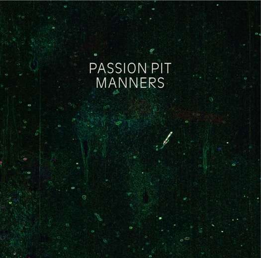
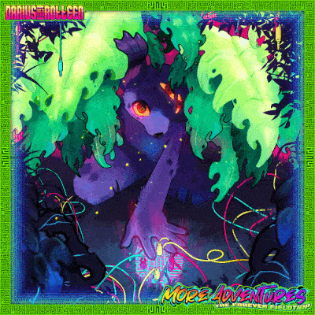
Em Essex - entire discography?
December 2024
Not to end the year without something new and exciting, a passing mention on a livestream led me to Em Essex. In no time at all, I had purchased their entire discography, and have been listening through albums as a backlog since. In honesty, the art attatched to each albums has been just as much a treat as the actual music.
Also, I had to change how I process all of my mp3 files to accomodate for all of the special characters in song / artist names, which was quite fun.
Honourable Mentions
Windowkill OST - Keestak, These Nuts - Ninja Sex Party, Hentai Jazz Deluxe - Mabisyo, Forever II - kazahana, Pushing Dasies - Julie, UNDERTALE Yellow OST
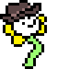
Older Music
This might be a little long, since I'll just be writing about any music I started liking before 2024.
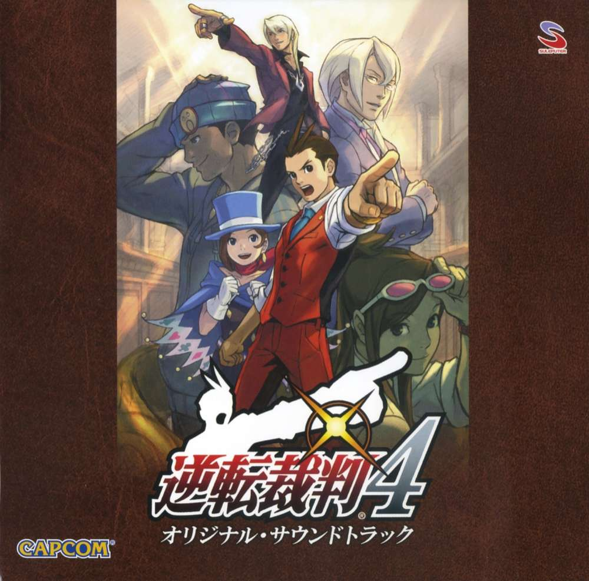
Apollo Justice: Ace Attorney
Consider this a spot for the soundtracks for every game in the Ace Attorney series. I'd say Apollo Justice might be the series' best, though that could switch out to AA3 or AAI2, depending on the day you ask. The actual game has a little too much underwear talk for my liking though.
Asian Hideout
(Artist)
This group only has about a handful of songs to their name at the moment, but I love them. Sugar Rush and ERROR 403: paradise x paradigm specifically. Sometimes you need a hyper energetic pop tune to inject straight into your veins.
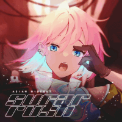
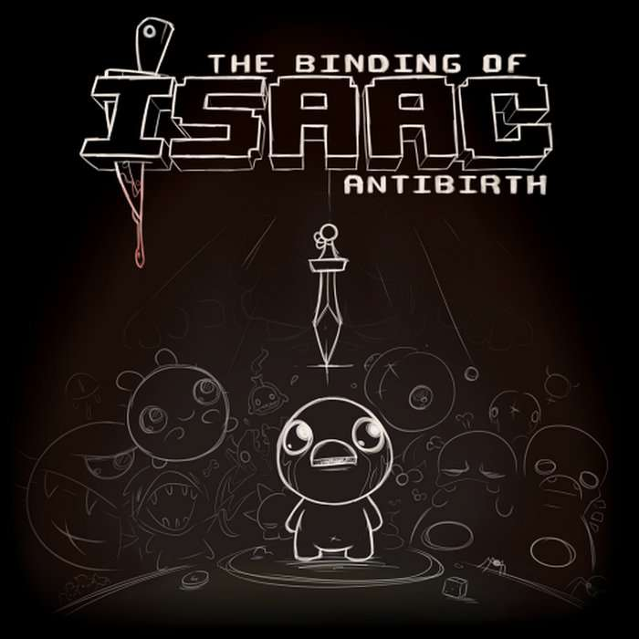
I've put many, many hours into The Binding of Isaac, but the music never did much for me. The Antibirth mod OST, however, is amazing, dialing up the atmosphere and intensity by a lot. On the subject of Isaac mod OSTs, shoutout to the weird and wonderful Excelsior.
What can I say about Bomb Rush Cyberfunk that has not already been said. If you have had the misfortune of not having anyone in your life beg you to play this game yet, or at the very least listen to it's soundtrack, let me be that person for you. The funk is off the charts.
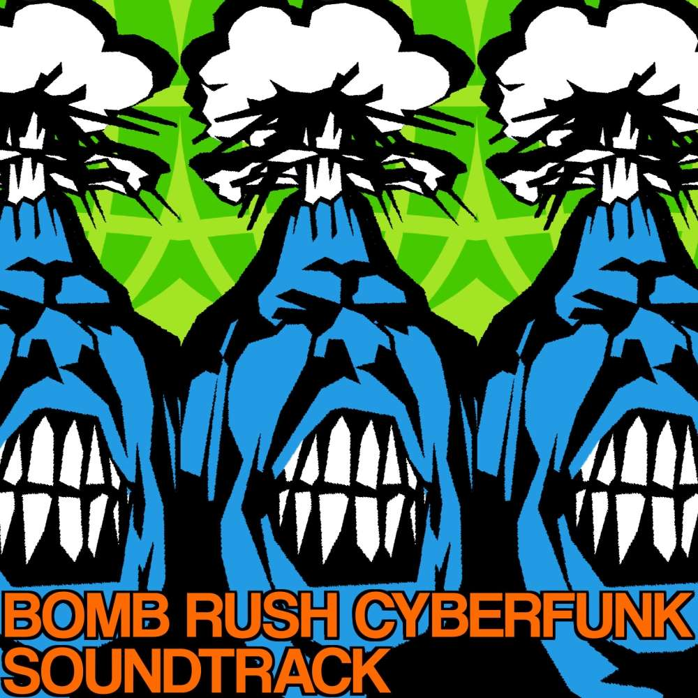
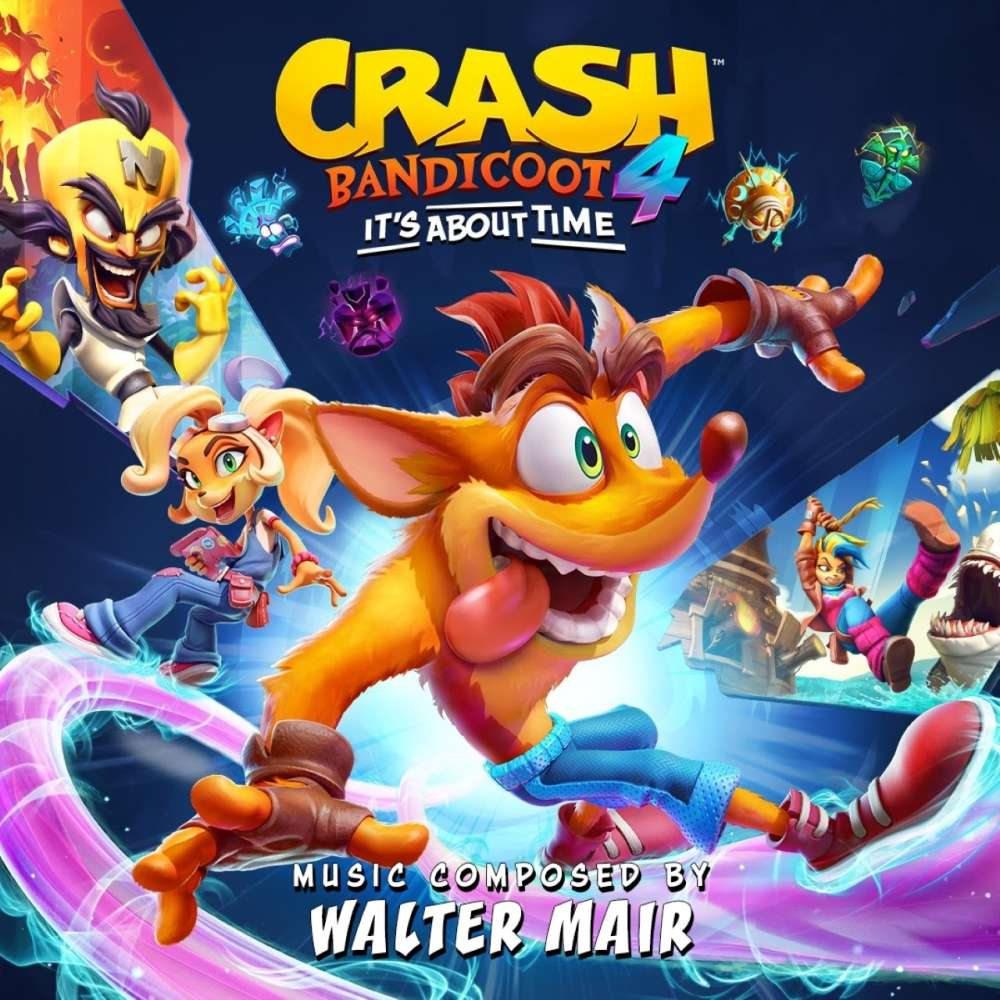
Crash Bandicoot
(Series)
As a long time fan of the Crash series, I'm also in love with it's music. I chose Crash 4 for the image because I think that might be some of the series' stronger work, but all of the PS1 games (and their 2010s remasters) are great, and the Titans duology, while not stellar games, have some music that I think deserves recognition. (Turf's Up from CotT, Pressureless Preamble and Ratcicle Kingdom from C:MoM are personal favorites.)
When I first played Dicey Dungeons in 2019, it's soundtrack quickly became one of my favorites of all time. Then it got more episodes, with more music. This game has some of my favorite music in any game. With special shoutouts to the halloween combat themes, and every song from the Reunion episode. Chipzel does not miss.
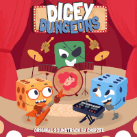
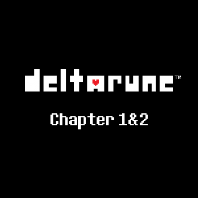
What can I say that has not already been said. It's so good that I'd still consider it a masterpeice even though it has a siren alarm remix of Napstablook's theme, and like 7 songs dedicated to an extended Homestar Runner reference (the only thing I know about Homestar Runner is that Strongbad is in Poker Night at the Inventory). Wait, this is supposed to be about Deltarune... My favorite track is Smart Race.
I still don't understand Everhood. It's got some kind of Buddhism themes going, and is about eternal life, kind of? I also don't understand how to play Everhood. It's rhythm-but-not-quite battle system doesn't mesh well with my brain, and I end up floundering a lot. What I do understand is that Everhood has an amazing soundtrack. Seriously, I still get emotional when listening to Farewell Battle & Farewell Loop. Kind of sad that the Eternity Edition Tracks haven't been released anywhere.
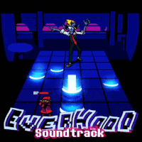
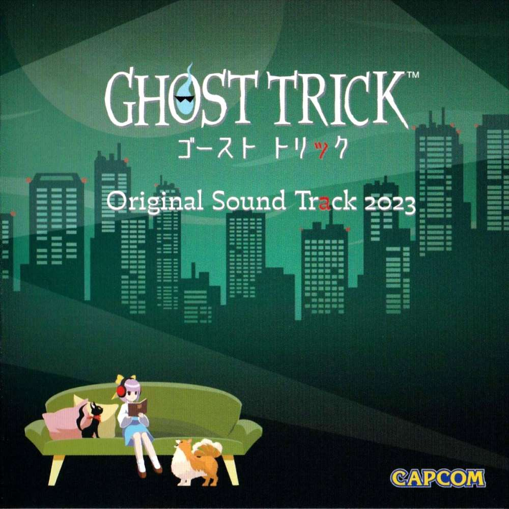
Ghost Trick: Phantom Detective
I still kind of can't believe they re-released Ghost Trick last year. I also can't believe how hard the soundtrack goes. Seriously, there are zero bad tracks here. Listen to one now (Might be a little loud):
I'm very glad I was introduced to the soundtracks for these two games. I've never seen gameplay of either, and to be honest I don't know if I'll ever seek it out. To me, Mighty Switch Force is two albums of very good high energy electronic jams.
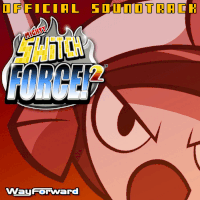
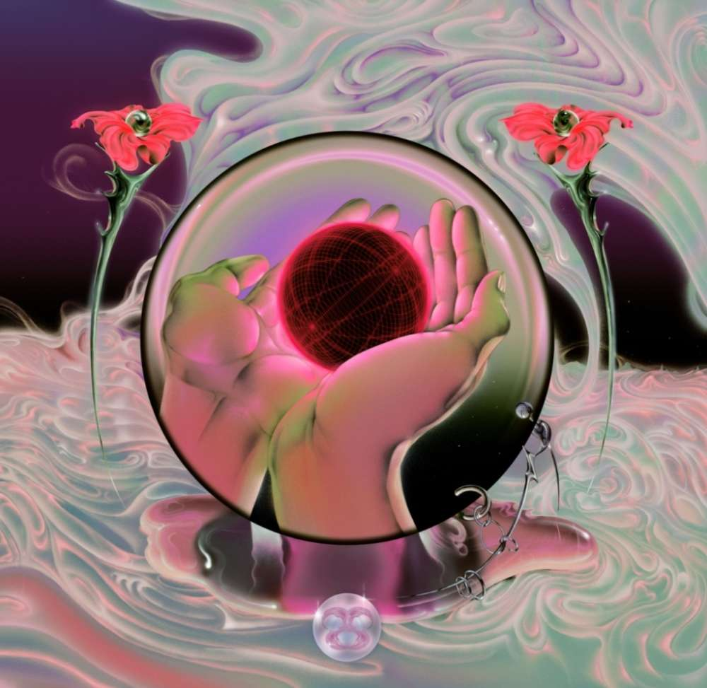
Finally, an actual album! I like this one. The more soft poppy tone and vocals are a musical niche that I hadn't fufilled yet, or since to that matter, but I'm glad I was reccomended this album. I'd list my favorite tracks, but I just looked at the song list to try and I'd basically just be naming all of them. My favorite song is the whole album.
Oh Boy. I don't remember how I was introduced to Neon White, but I don't know how I could live without. I'll save the gushing about the gameplay for when I write the segment on that, but the music is just as good, if not better. If this is just the beginning of becoming Machine Girl pilled, I will die happy.
Side note, I looked it up, Machine Girl is neither Machine nor Girl. this is screwed up
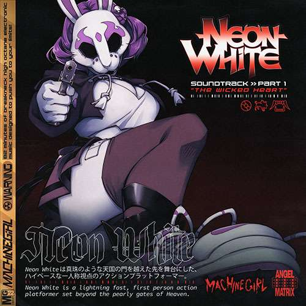
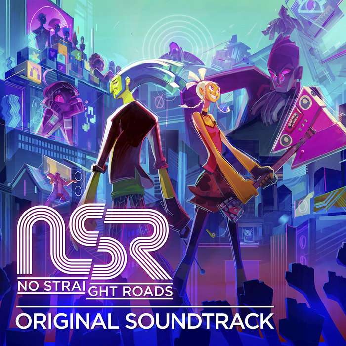
This. Game. Rules. Well, actually the game is kind of a mess, but the soundtrack is definitely rad. I love a good boss fight, I love a good music game, and I love a good music boss fight, and this is basically all musical boss fights. My favorite track is 'vs. SAYU', though 'The Revolution Comes Around' Is a solid second.
Sonic CD
I've never beaten a Sonic game (Unless you count either of the All Stars Racing games). Despite this, I have to appreciate the consistent quality of music in games almost the whole franchise wide. There's a lot of evolutions from your original Genesis trilogy, to your CD (my personal favorite), to your guitary Heroes, and all the way up to the modern House / Electronic stylings of Fronteirs.
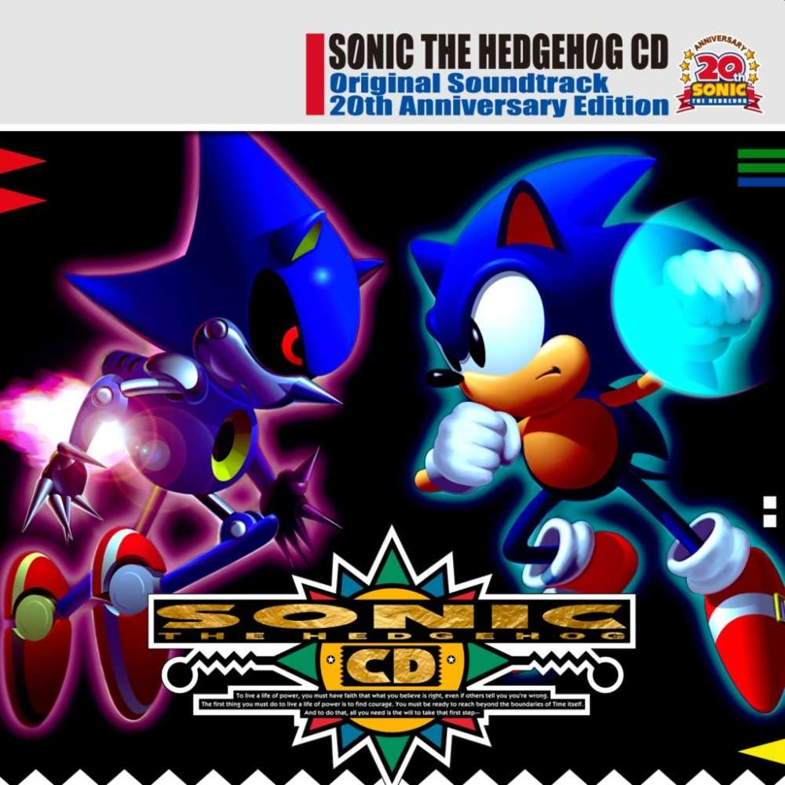
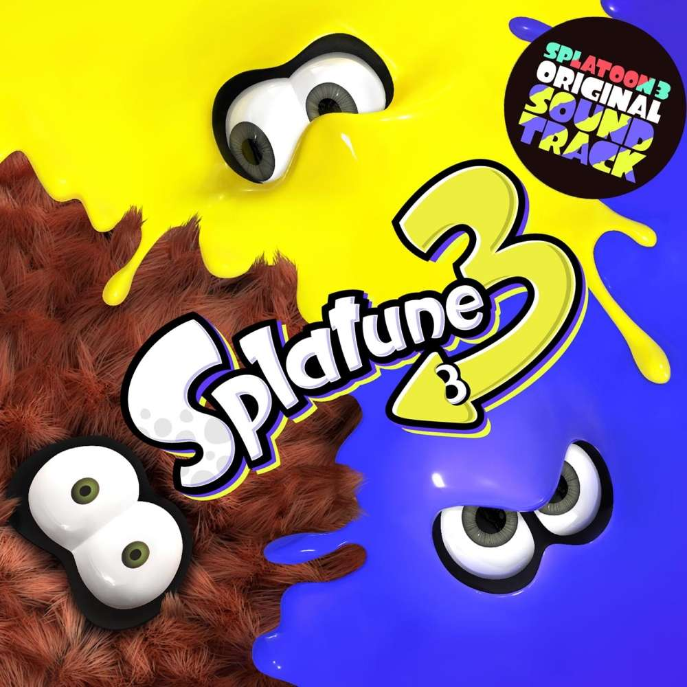
Splatoon 3
This might be the most listened-to soundtrack in my entire collection. If mp3 files could wear out, my copies of Till Depth Do Us Part, I'm Octavio (F34RME Remix), All of the Alterna level themes, Anarchy Rainbow, and especially the Calamari Inkantation 3MIX would be ground to digital dust. (It was listening to a YT rip of Till Depth Do Us Part (or 'Splatfest Battle 2, as it was called then') on loop that practically got me into the series in the first place.)
Though it's close, Together Through Time is my favorite TWRP album. Which, I swear, is not just the nostalgia talking, since this album came out... let me check here... Six years ago! good lort. Favorite track: Starlight Brigade
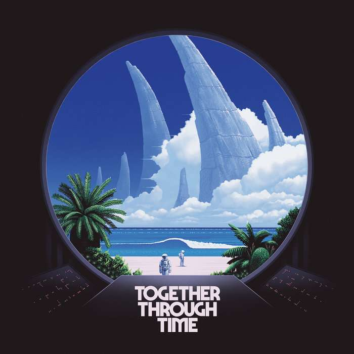

I couldn't leave Undertale out of my list. To be honest, the soundtrack has kind of worn out into my ears, due to overlistening and overexposure. Like eating your favorite food over and over again, It still tastes the same, but you're kind of... used to it? But if you leave it for a while and come back, then it still hits just like it did before. Favorite tracks: Here We Are, Waterfall, Battle Against A True Hero, Hopes And Dreams.
To be honest, I don't remember how I came across these many years ago, but I did, and I'm glad I did because these are super cool. A collection of four Undertale remix albums by various artists, with songs in all manner of different styles. Ever wanted to hear Hopes and Dreams in Ska? Spider Dance and Bonetrousle in Dubstep? Or a beautiful rendition of Heartache composed by Itoki Hana, who would later go on to work with Toby Fox on The Greatest Living Show? All that and more, in Underveil.
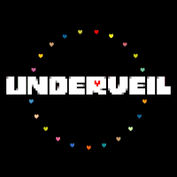
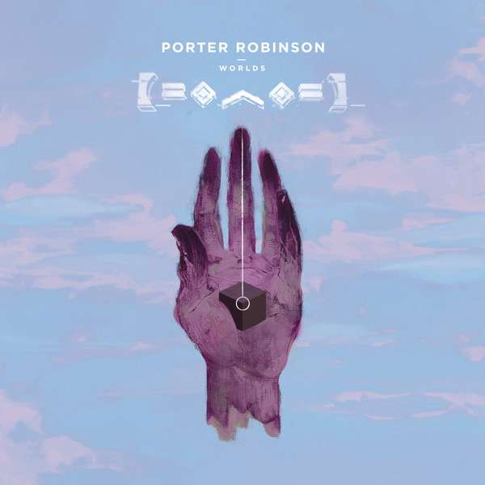
I'm not enough in the loop to know what other people think about this album. Is it good? Bad? Overplayed? Does it come with a stigma? No idea. What I do know is that I heard Goodbye To a World in an Undertale MV in like 2016, listened to the full album a couple years later and liked it a lot. Looking back, I guess I kind of answered my own question there...
Yes - Pet Shop Boys
I've been a fan of the early Pet Shop Boys for a while, on my father's side. I don't have much to say about it, other than that It's good music (And that they had wacky early computer graphics music videos). Nice! Favorite track: More Than A Dream
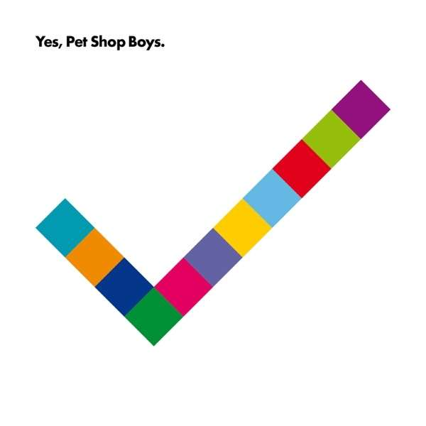
Honourable Mentions
And The Flying Boombox - No More Kings, ARMS (OST), Celeste (OST)you don't need me to tell you Celeste has good music, Crypt (and Chipped) of the Necrodancer (OST), Ember - Kubbi, Holocure (OST), Oneshot (OST), Pac Man Championship Edition CE (OST), SharaX (Artist), Tetris 99, Tetris Effect and Tetris CDI, World of Goo (OST),
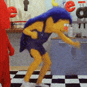
2025
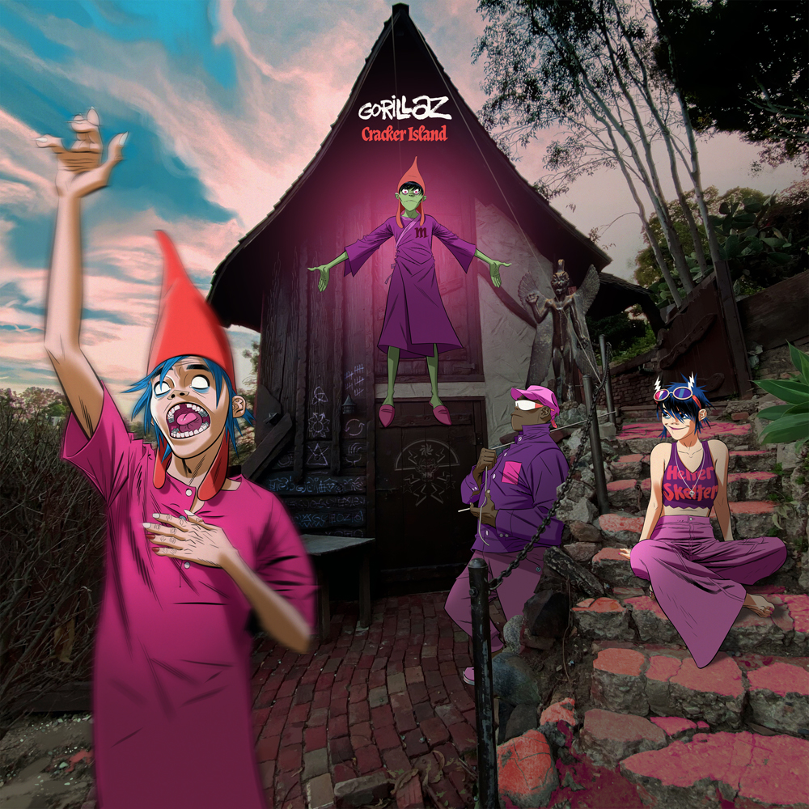
Cracker Island - Gorillaz
Jan 20th 2025
Some time last year, I heard the title track, Cracker Island, playing over the speakers in a music store. I really liked what I heard, but didn't have any way to find out what song it was, so I just frantically googled what I thought the lyrics were until I gave up and forgot about it.
Fast forward to this week, where a friend plays it in their car, and I feel like the guy from rattatoulie having a flashback. suffice to say, listening to the entire album has shown me that I have made a mistake by not listening to any modern Gorillaz.
Favorite Tracks: Cracker Island & New Gold
Gameshow - Two Door Cinema Club
Tourist History, also
Been on a pop-guitar kick recently, spurred on by hearing 'Every Night' by flor on the intro to a Snapcube stream. That led me to a playlist which contained Lavender, which got me hooked on this whole album! Which is a no brainer really, since I already enjoyed Tourist history so much, after picking up the whole album from memes that use Undercover Martyn.
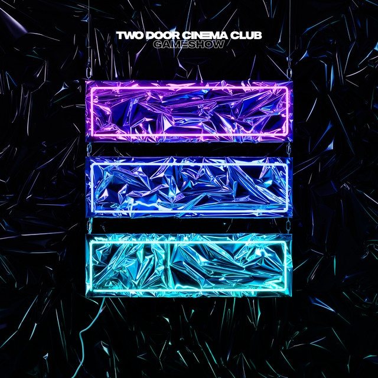
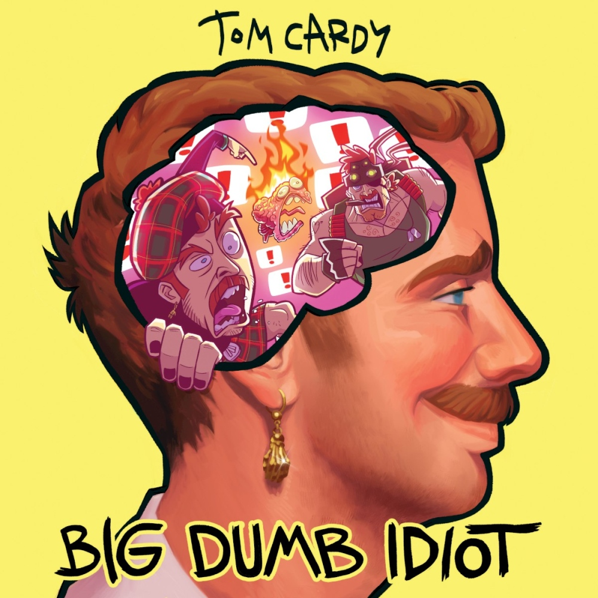
Big Dumb Idiot - Tom Cardy
(And his other two albums)
Exploring artists you like is always good! Explored a handful of his songs when Beautiful Mind came out in (*checks notes*).. 2023, and again when he showed up in TWRP's Digital Nightmare last year. Finally got my hands on all his albums, all great stuff! The line "Wikipedia of the Vatican" has been bouncing around in my mind for days. (also the pope just died??? coincidence??)
Favorite Tracks: Your Love is Not Enough (I'd Like Some Cool Shit Too) & Party Dog
Honourable Mentions
Enchanted Instruments and Whispers - Windows96
